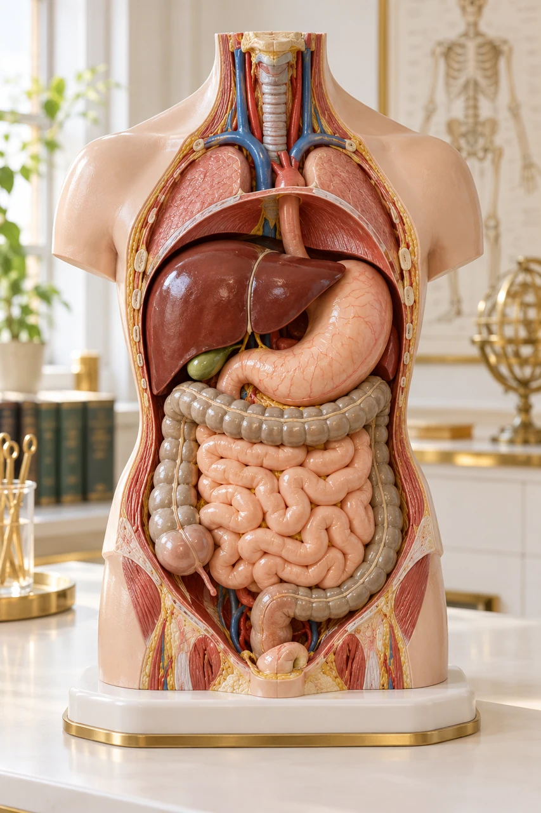

Hook • Can you decode a surgical history?
MEDLEX / CROWN GOLD
Digestive system
Interactive lesson27 slides · explore, recall, explain
 MedLexTHE LANGUAGE OF MEDICINE
MedLexTHE LANGUAGE OF MEDICINE Healthcare Crown Academy
Healthcare Crown AcademyMEDLEX / BATCH 03
Digestive
system
Learn the words, trace the relationships and explain the clinical meaning with precision.
27 slidesExplore · recall · applyCrown Gold

02 / Engage
One word. A whole story.
Explore the detail panels. Recall the meaning. Explain the distinction.
Which structure was removed? Which digestive function remains?
Reveal the meaning
Cholecystectomy = surgical removal of the gallbladder. The liver still produces bile; the gallbladder previously stored and concentrated it. Today you will learn how a long word becomes a short, accurate explanation.
• Medical terminology / Digestive system
SOURCESNLM / Medical word partsNIH / Your digestive system & how it works
03 / Plan
Your learning route
Explore the detail panels. Recall the meaning. Explain the distinction.
Objectives • By the end, you should be able to…
Locate
Trace the GI tract and distinguish it from accessory organs.
Decode
Identify combining forms and suffixes in digestive terms.
Distinguish
Separate symptoms, diagnoses, procedures, and look-alike terms.
Apply
Translate a short clinical record into plain language.
• Medical terminology / Digestive system
SOURCESNLM / Medical word partsNIH / Your digestive system & how it works
04 / Anatomy
Follow the route
Explore the detail panels. Recall the meaning. Explain the distinction.
Source desk
[1] ↗SOURCESNLM / Medical word partsNIH / Your digestive system & how it works
05 / Anatomy
Process words explain function
Explore the detail panels. Recall the meaning. Explain the distinction.
Use the process to remember the structure.
Ingestion & mastication
Taking in food and chewing it.
Deglutition
Swallowing; moves a bolus from the mouth toward the esophagus.
Peristalsis
Coordinated muscular waves that propel GI contents.
Digestion
Mechanical and chemical breakdown of food.
Absorption
Movement of digested nutrients across the intestinal lining.
Defecation
Elimination of stool through the anus.
• Medical terminology / Digestive system
SOURCESNLM / Medical word partsNIH / Your digestive system & how it works
06 / Anatomy
The small intestine has three names
Most nutrient absorption occurs in the small intestine.
Keep the order: duodenum → jejunum → ileum.
Duodenum
duoden/o
→ 02Jejunum
jejun/o
→ 03Ileum
ile/o
Most nutrient absorption occurs in the small intestine.
A spelling trap worth catching
Ileum = part of the small intestine. Ilium = part of the hip bone. Ileus = impaired intestinal propulsion without a mechanical blockage.
• Medical terminology / Digestive system
SOURCESNLM / Medical word partsNIH / Your digestive system & how it works
07 / Anatomy
Three accessory partners
Explore the detail panels. Recall the meaning. Explain the distinction.
Food stays in the tract; secretions enter through ducts.
Liver • hepat/o
Produces bile, which helps emulsify dietary fats.
Gallbladder • cholecyst/o
Stores and concentrates bile; releases it into the small intestine.
Pancreas • pancreat/o
Exocrine secretions include digestive enzymes and bicarbonate.
• Medical terminology / Digestive system
SOURCESNLM / Medical word partsNIH / Your digestive system & how it works
08 / Word building
A reusable decoding method
Gastroenteritis = inflammation of the stomach and intestines.
Read the suffix first. Then connect the roots.
Gastroenteritis = inflammation of the stomach and intestines.
Combining form
A root plus a combining vowel: gastr/o. The slash is a teaching aid.
Combining vowel
Often “o”; usually retained between roots and omitted before a vowel-starting suffix.
Meaning before mechanics
Medical words have historical exceptions. Confirm unfamiliar words in a reliable source.
• Medical terminology / Digestive system
Source desk
[2] ↗SOURCESNLM / Medical word partsNIH / Your digestive system & how it works
09 / Word building
Upper tract word bank
Explore the detail panels. Recall the meaning. Explain the distinction.
Flip each card. Say the meaning before checking.
• Medical terminology / Digestive system
Source desk
[2] ↗SOURCESNLM / Medical word partsNIH / Your digestive system & how it works
10 / Word building
Intestinal & accessory word bank
Explore the detail panels. Recall the meaning. Explain the distinction.
SOURCESNLM / Medical word partsNIH / Your digestive system & how it works
11 / Word building
Suffixes change the message
Explore the detail panels. Recall the meaning. Explain the distinction.
SOURCESNLM / Medical word partsNIH / Your digestive system & how it works
12 / Word building
Build it. Then translate it.
Explore the detail panels. Recall the meaning. Explain the distinction.
SOURCESNLM / Medical word partsNIH / Your digestive system & how it works
13 / Clinical vocabulary
Symptoms: hear the distinction
Explore the detail panels. Recall the meaning. Explain the distinction.
SOURCESNLM / Medical word partsNIH / Your digestive system & how it works
14 / Clinical vocabulary
Bleeding words carry urgency
Explore the detail panels. Recall the meaning. Explain the distinction.
Describe what is observed; avoid guessing the source.
Hematemesis
Vomiting blood; it may appear bright red or like coffee grounds.
Melena
Black, tarry stool, often from upper GI bleeding. Iron or bismuth can darken stool without bleeding.
Hematochezia
Passage of red or maroon blood through the rectum; often lower GI, but brisk upper GI bleeding can also cause it.
• Medical terminology / Digestive system
SOURCESNLM / Medical word partsNIH / Your digestive system & how it works
15 / Clinical vocabulary
Inflammation is a pattern
Explore the detail panels. Recall the meaning. Explain the distinction.
Location + -itis tells you what is inflamed.
| Term | Decode | Plain-language meaning |
|---|---|---|
| Gastritis | gastr + -itis | Inflammation of the stomach lining |
| Enteritis | enter + -itis | Inflammation of the intestine |
| Colitis | col + -itis | Inflammation of the colon |
| Hepatitis | hepat + -itis | Inflammation of the liver |
| Pancreatitis | pancreat + -itis | Inflammation of the pancreas |
| Cholecystitis | cholecyst + -itis | Inflammation of the gallbladder |
A suffix tells you the process, not the cause or severity.
• Medical terminology / Digestive system
Source desk
[2] ↗SOURCESNLM / Medical word partsNIH / Your digestive system & how it works
16 / Clinical vocabulary
Similar names. Different conditions.
Explore the detail panels. Recall the meaning. Explain the distinction.
Use precise modern terminology.
GERD / GORD
Gastroesophageal / gastro-oesophageal reflux disease: reflux causing troublesome recurring symptoms or complications.
IBS
Irritable bowel syndrome: a disorder of gut–brain interaction, with recurring abdominal pain and altered bowel habits.
IBD
Inflammatory bowel disease: includes Crohn’s disease and ulcerative colitis.
Celiac / coeliac disease
An immune-mediated disorder triggered by gluten that damages the small intestine.
• Medical terminology / Digestive system
SOURCESNLM / Medical word partsNIH / Your digestive system & how it works
17 / Clinical vocabulary
Stones, ducts & narrowing
Explore the detail panels. Recall the meaning. Explain the distinction.
Add specificity one word part at a time.
| Term | Meaning |
|---|---|
| Cholelithiasis | Gallstones |
| Choledocholithiasis | Stone(s) in the common bile duct |
| Cholangitis | Inflammation of bile ducts |
| Stenosis / stricture | Abnormal narrowing |
A duct stone and a gallbladder stone are not the same location.
• Medical terminology / Digestive system
Map key
Common bile ductGallbladderSCHEMATIC · NOT TO SCALESOURCESNLM / Medical word partsNIH / Your digestive system & how it works
18 / Procedures
Look, remove, open, connect
Explore the detail panels. Recall the meaning. Explain the distinction.
The suffix describes the action.
| Suffix | Action | Example |
|---|---|---|
| -scopy | Visual examination | Colonoscopy: examination of the colon |
| -ectomy | Surgical removal | Colectomy: removal of part or all of the colon |
| -otomy | Incision into | Laparotomy: surgical incision into the abdomen |
| -ostomy | Surgically created opening | Colostomy: opening from the colon to the abdominal wall |
| -plasty | Surgical repair / reconstruction | Pyloroplasty: surgical widening of the pyloric opening |
• Medical terminology / Digestive system
SOURCESNLM / Medical word partsNIH / Your digestive system & how it works
19 / Procedures
Where does the scope go?
Explore the detail panels. Recall the meaning. Explain the distinction.
Select an examination to reveal its route.
EGD / upper GI endoscopy
Examines the esophagus, stomach, and duodenum . EGD = esophagogastroduodenoscopy. The scope enters through the mouth; biopsies may be taken.
Colonoscopy
Examines the colon and rectum through the anus. The terminal ileum may also be viewed. Biopsy or polyp removal may be performed.
ERCP
Endoscopic retrograde cholangiopancreatography combines endoscopy and fluoroscopic imaging to access bile and pancreatic ducts. It is often used to treat duct problems.
• Medical terminology / Digestive system
SOURCESNLM / Medical word partsNIH / Your digestive system & how it works
20 / Communication
Translate the chart safely
Explore the detail panels. Recall the meaning. Explain the distinction.
Expand abbreviations before using them with patients.
| Abbreviation | Expansion | Plain language |
|---|---|---|
| GI | Gastrointestinal | Related to the stomach and intestines |
| NPO | Nil per os | Nothing by mouth; follow the specific clinical order |
| GERD / GORD | Gastroesophageal reflux disease | Reflux disease |
| EGD / OGD | Esophagogastroduodenoscopy / oesophagogastroduodenoscopy | Upper GI endoscopy |
| IBS / IBD | Irritable bowel syndrome / inflammatory bowel disease | Different disorders; never interchange |
Abbreviations vary by institution and country. Confirm local policy and context.
• Medical terminology / Digestive system
SOURCESNLM / Medical word partsNIH / Your digestive system & how it works
21 / Apply
Case 01 · Explain the operation
Explore the detail panels. Recall the meaning. Explain the distinction.
A fictional record for terminology practice.
1 · Locate
Which organ and material are involved?
2 · Identify
Which word shows inflammation?
3 · Translate
What operation was performed?
Compare with a model explanation
Gallstones were present, and the gallbladder was inflamed. The gallbladder was removed using a laparoscopic approach (small incisions with a camera). The liver continues to make bile.
• Medical terminology / Digestive system
SOURCESNLM / Medical word partsNIH / Your digestive system & how it works
22 / Apply
Case 02 · Explain the investigation
Explore the detail panels. Recall the meaning. Explain the distinction.
A symptom is not yet a diagnosis.
What is the patient experiencing?
Difficulty swallowing and pain with swallowing. These are distinct symptoms that may occur together.
What is planned?
A camera examination of the esophagus, stomach, and duodenum. A tissue sample may be taken for microscopic examination.
What can you NOT conclude?
The symptoms and planned test do not establish cancer, reflux disease, or any other specific diagnosis.
• Medical terminology / Digestive system
Source desk
[6] ↗SOURCESNLM / Medical word partsNIH / Your digestive system & how it works
23 / Check
Retrieval challenge
Explore the detail panels. Recall the meaning. Explain the distinction.
SOURCESNLM / Medical word partsNIH / Your digestive system & how it works
24 / Consolidate
Your pocket glossary
Explore the detail panels. Recall the meaning. Explain the distinction.
SOURCESNLM / Medical word partsNIH / Your digestive system & how it works
25 / Consolidate
Decode → locate → explain
Explore the detail panels. Recall the meaning. Explain the distinction.
Return to the first word. What can you now say?
Decode
cholecyst + -ectomy: gallbladder + surgical removal.
Locate
The gallbladder is an accessory digestive organ.
Explain
“Your gallbladder was removed. Your liver still makes bile.”
Exit ticket
1. Explain why hepatomegaly is not the same as hepatitis.
2. Contrast colectomy and colostomy.
3. Translate dysphagia without using another medical term.
• Medical terminology / Digestive system
SOURCESNLM / Medical word partsNIH / Your digestive system & how it works
26 / Sources
References
Explore the detail panels. Recall the meaning. Explain the distinction.
Direct links to authoritative sources used in this lesson.
Your Digestive System & How It Works
Reviewed Dec 2017; foundational anatomy and physiology.
Appendix A: Word Parts and What They Mean
Word roots, combining forms, and suffixes; no review date stated.
Reviewed Jul 2020; reflux terminology.
Definition & Facts for Irritable Bowel Syndrome
Current page checked; modern gut–brain terminology.
Definition & Facts for Celiac Disease
Current page checked; definition and distinctions.
Web resources checked 19 October 2026. Access date is not a publication date. Original vector schematics are educational illustrations, not diagnostic images. Teaching resource; not a clinical management guideline.
• Medical terminology / Digestive system
Source desk
[1] NIDDK Your Digestive System & How It Works Reviewed Dec 2017; foundational anatomy and physiology. ↗[2] MedlinePlus / NLM Appendix A: Word Parts and What They Mean Word roots, combining forms, and suffixes; no review date stated. ↗[3] NIDDK Definition & Facts for GER & GERD Reviewed Jul 2020; reflux terminology. ↗[4] NIDDK Definition & Facts for Irritable Bowel Syndrome Current page checked; modern gut–brain terminology. ↗[5] NIDDK Definition & Facts for Celiac Disease Current page checked; definition and distinctions. ↗[6] MedlinePlus EGD – esophagogastroduodenoscopy Procedure route and biopsy. ↗[7] MedlinePlus Gastrointestinal bleeding Bleeding descriptors and urgency. ↗[1] ↗[2] ↗[3] ↗[4] ↗[5] ↗[6] ↗[7] ↗SOURCESNLM / Medical word partsNIH / Your digestive system & how it works
27 / Sources
References · continued
Explore the detail panels. Recall the meaning. Explain the distinction.
Direct links to authoritative sources used in this lesson.
Melena and non-bleeding causes of dark stool.
Examination route, biopsy and polyp removal.
Gallbladder and duct stone terminology.
Endoscopy with x-rays for bile and pancreatic ducts.
Web resources checked 19 October 2026. Access date is not a publication date. Original vector schematics are educational illustrations, not diagnostic images. Teaching resource; not a clinical management guideline.
• Medical terminology / Digestive system
Source desk
[8] MedlinePlus Black or tarry stools Melena and non-bleeding causes of dark stool. ↗[9] NIDDK Ostomy Surgery of the Bowel Ostomy concepts and terminology. ↗[10] MedlinePlus Colonoscopy Examination route, biopsy and polyp removal. ↗[11] NIDDK Ulcerative Colitis IBD overview. ↗[12] NIDDK Gallstones Gallbladder and duct stone terminology. ↗[13] NIDDK ERCP Endoscopy with x-rays for bile and pancreatic ducts. ↗[8] ↗[9] ↗[10] ↗[11] ↗[12] ↗[13] ↗ARTWORK & ATTRIBUTION
Teaching imagery combines generated raster artwork and symbols from the supplied Health Icons asset packs. Models and scenes are conceptual teaching aids. They are not diagnostic diagrams or patient images. Source desks retain attribution to OpenStax, Open RN and the clinical publishers used in the original lessons. No source endorsement is implied.
SOURCESNLM / Medical word partsNIH / Your digestive system & how it works
Explore · recall · explain
01 / 27
ONE ANNOTATION STANDARD
Pointer · interact with the lesson← → Navigate · A Tools · F Focus · Esc Exit
LESSON 01 / 08 · 27 SLIDESNext lesson: Lymphatic & immune systems →